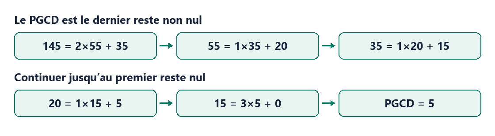

Comprendre le cours
On part d’un calcul concret, puis on explique la règle qui permet de le refaire avec d’autres nombres.
Choisir un chapitre
- Le vocabulaire pour commencer
- Mesurer le travail d’un algorithme
- Diviser, tester et compter les premiers
- PGCD, PPCM, Euclide et Bézout
- Résoudre une équation dans les entiers
- Congruences, structures et inverses
- César, affine et Hill
- Combiner plusieurs contraintes
- Indicatrice, Euler et Fermat
- Carrés successifs, ordre et logarithme discret
- Diffie–Hellman et ElGamal
- RSA, les deux modulos et la diffusion
- Fermat, Miller–Rabin et premiers probables
- Sac à dos et Merkle–Hellman
Le vocabulaire pour commencer
Peux-tu retrouver une lettre après l’avoir transformée ?
| Transformation modulo 8 | Départ 0 | Départ 4 |
|---|---|---|
| Multiplier par 2 | 0 → 0 | 4 → 0 |
| Multiplier par 3 | 0 → 0 | 4 → 4 |
Si deux entrées donnent la même sortie, cette sortie seule ne permet plus de choisir la bonne entrée.
Chiffrer transforme un message lisible en un message que seule une personne disposant de la bonne clé doit pouvoir retrouver. Encoder change la représentation (une lettre devient des octets en UTF-8). Authentifier permet de vérifier une identité. Le principe de Kerckhoffs fait reposer la sécurité du chiffrement sur le secret de la clé, avec une méthode qui peut être publique.
Une fonction associe exactement un résultat à chaque entrée. Ce résultat est son image, et toute entrée qui donne ce résultat est un antécédent. Injective veut dire « au plus un antécédent par résultat », surjective « au moins un », bijective « exactement un ». On peut alors faire le chemin inverse.
Pour vérifier que multiplier par 3 se renverse pour tous les restes, multiplie le résultat de nouveau par 3. Tu as alors multiplié par 9, qui laisse 1 modulo 8. Chaque entrée revient à sa valeur de départ.
Les notations. ℕ contient les entiers naturels, ℤ les entiers relatifs. Le symbole ∈ se lit « appartient à », ∀ « pour tout », ∃ « il existe ». Une puissance répète une multiplication, √N est la racine carrée de N, et log₂(8)=3 car 2³=8. On note ln le logarithme naturel, Σ une somme et ∏ un produit.
Mesurer le travail d’un algorithme
Si tu doubles le nombre de données, combien de fois la boucle tourne-t-elle ?
| Ce que fait le programme | Nombre de tours | Croissance |
|---|---|---|
| Une action par donnée | n | O(n) |
| Toutes les paires ordonnées | n × n | O(n²) |
| Couper la taille en deux à chaque tour | Environ log₂(n) | O(log n) |
Commence par définir n. Pour un grand entier, on peut compter les bits de son écriture plutôt que prendre sa valeur.
Temps et mémoire. Compte les opérations répétées pour le temps et les données gardées pour la mémoire. Grand O borne leur croissance au-delà d’un certain seuil. Par exemple, 4n² + 2n + 6 est en O(n²), car le carré domine quand n grandit. Double une quantité à chaque tour et tu obtiens un nombre logarithmique de tours.
Un algorithme qui teste jusqu’à √N fait de l’ordre de 2^(k/2) essais dans le pire cas si N est écrit sur k bits. Le nombre N et le nombre k de bits qui le représentent sont deux tailles différentes.
Classes de décision. P regroupe les questions oui/non résolues en temps polynomial. NP regroupe celles dont un « oui » se vérifie en temps polynomial à l’aide d’un certificat. On sait que P est incluse dans NP. PSPACE borne la mémoire par un polynôme, EXP le temps par une exponentielle. Donner les facteurs d’un entier permet de contrôler leur produit rapidement.
Sens unique et trappe. On suppose certaines opérations faciles à calculer et difficiles à inverser. Une trappe est une information qui facilite l’inversion. Un ordre de grandeur de durée s’obtient en divisant le nombre d’opérations par le débit supposé.
Pourquoi un problème est-il dit NP-complet ?
Il est dans NP et tout problème de NP peut s’y ramener par une transformation calculable en temps polynomial. Un algorithme polynomial pour un seul problème NP-complet suffirait donc à résoudre tous les problèmes de NP en temps polynomial. Le sac à dos sous forme de décision fournit un exemple de cette notion.
Diviser, tester et compter les premiers
Que reste-t-il quand tu fais des paquets de six avec 29 objets ?
| Écriture | Lecture |
|---|---|
| 29 = 6 × 4 + 5 | Quatre paquets complets, cinq objets à part |
| 30 = 6 × 5 + 0 | Cinq paquets complets, aucun reste |
Le reste est ce qui permet de décider si le partage tombe juste.
Diviser. Pour b>0, a=bq+r avec 0≤r<b. Le quotient q compte les multiples de b et r est ce qu’il reste. On écrit b∣a si r=0. Même pour −17 divisé par 5, le reste doit être dans cet intervalle, donc q=−4 et r=3.
Reconnaître un premier. Un premier a exactement deux diviseurs positifs, 1 et lui-même. Tout entier supérieur à 1 se décompose de façon unique en facteurs premiers, à l’ordre près. Si N=ab est composé, l’un des facteurs est au plus √N, sinon ab dépasserait N.
Pour 97, teste les premiers 2, 3, 5 et 7. Ils sont les seuls premiers jusqu’à la racine et aucun ne divise 97.
Construire une liste. Le crible barre les multiples de chaque premier p à partir de p². Les multiples plus petits ont déjà été atteints. Le nombre de premiers jusqu’à N, π(N), est asymptotiquement voisin de N/ln(N). La proportion diminue quand N grandit.
PGCD, PPCM, Euclide et Bézout

Comment trouver le PGCD de 180 et 126 sans les factoriser ?
- 180 = 1 × 126 + 54 · Reprendre 126 et 54
- 126 = 2 × 54 + 18 · Reprendre 54 et 18
- 54 = 3 × 18 + 0 · S’arrêter. Le PGCD vaut 18.
Le dernier reste différent de zéro sert aussi de point de départ à la remontée de Bézout.
PGCD et PPCM. Le premier est le plus grand diviseur positif commun. Le second est le plus petit multiple positif commun de deux entiers positifs. Avec les facteurs premiers, le PGCD garde les plus petits exposants et le PPCM les plus grands. Par conséquent PGCD(a,b) × PPCM(a,b)=ab pour a,b>0.
Pourquoi Euclide fonctionne. Un diviseur de 180 et 126 divise aussi leur différence 54. Inversement, un diviseur de 126 et 54 divise leur somme 180. La liste des diviseurs communs reste donc la même à chaque ligne, jusqu’à la division exacte.
Bézout. On remonte les lignes d’Euclide pour retrouver u,v entiers avec au+bv=PGCD(a,b). Ici 18=126−2×54=3×126−2×180. Deux entiers sont premiers entre eux exactement quand cette combinaison peut donner 1.
Résoudre une équation dans les entiers
Comment changer x et y tout en gardant le même total ?
| Valeur de t | Couple (x,y) | Contrôle dans 4x + 6y |
|---|---|---|
| 0 | (2,0) | 8 + 0 = 8 |
| 1 | (5,−2) | 20 − 12 = 8 |
| −1 | (−1,2) | −4 + 12 = 8 |
Chaque pas ajoute 3 à x et retire 2 à y. Les deux changements se compensent : 4×3 + 6×(−2)=0.
Le filtre du PGCD. Dans ax+by=c, tout diviseur commun de a et b divise ax+by. Il faut donc que d=PGCD(a,b) divise c. Si c est divisible par d, multiplie une identité de Bézout par c/d, ce qui donne une première solution.
4x+6y=8 → 2x+3y=4 → (x₀,y₀)=(2,0) → x=2+3t et y=−2t, pour t entier. Avec 7 à droite, aucune solution entière, car le côté gauche est pair.
Pourquoi c’est toute la famille. Après division par d, retire une solution connue. Le théorème de Gauss dit que si a∣bc et PGCD(a,b)=1, alors a∣c. Ici 3∣2(x−2), donc 3∣(x−2). On pose x−2=3t, puis on obtient y=−2t. Les contraintes du problème, comme x≥0, s’imposent ensuite à t.
Congruences, structures et inverses
Sur une horloge, pourquoi 5 h et 17 h indiquent-elles la même position ?
| Calcul | Reste modulo 12 |
|---|---|
| 5 = 0 × 12 + 5 | 5 |
| 17 = 1 × 12 + 5 | 5 |
| −7 = (−1) × 12 + 5 | 5 |
Les trois nombres appartiennent à la même classe. Le reste est toujours choisi entre 0 et 11, même avec un nombre négatif.
Le même reste. 17≡5 (mod 12) car 17−5=12. Pense à une horloge de douze heures. Une classe modulo n réunit tous les entiers qui ont le même reste. Tu peux remplacer un nombre par son reste dans une somme, un produit ou une puissance à exposant entier positif.
Groupe, anneau et corps. Un groupe est muni d’une opération associative, d’un neutre et d’un inverse pour chaque élément. Avec l’addition modulo n, le neutre est 0. Un anneau ajoute une multiplication distributive. Dans un corps, chaque élément non nul est inversible aussi pour la multiplication. ℤ/nℤ est un corps lorsque n est premier.
Chercher 3⁻¹ (mod 8) revient à chercher x avec 3x≡1 (mod 8). 3×3=9 donne x=3. Bézout garantit l’inverse exactement lorsque PGCD(a,n)=1.
Équation linéaire. Pour ax≡b (mod n), pose d=PGCD(a,n). Si d∤b, aucune solution. Si d∣b, divise a, b et le modulo par d puis inverse le nouveau coefficient. La classe obtenue modulo n/d décrit l’ensemble des solutions.
César, affine et Hill
Quelles opérations faut-il défaire pour lire le message ?
| Chiffrement | À l’aller | Au retour |
|---|---|---|
| César | Ajouter un décalage | Soustraire le décalage |
| Affine | Multiplier par a, puis ajouter b | Soustraire b, puis multiplier par l’inverse de a |
| Hill | Multiplier le bloc par M | Multiplier le bloc par l’inverse de M |
Le PGCD permet de vérifier l’inversibilité du multiplicateur dans l’affine et du déterminant dans Hill.
César. Attribue un indice à chaque lettre. Si A=0, ajouter 3 mod 26 transforme A en D et Z en C. Soustraire 3 rend les lettres de départ.
Affine. Calcule y≡ax+b (mod n). Pour revenir, enlève b puis multiplie par a⁻¹. Avec a copremier à n, c’est une bijection. Le même principe fonctionne sur des octets de 0 à 255, en préservant l’encodage choisi.
Hill. Une matrice est un tableau. Elle transforme un bloc (une colonne de nombres) en multipliant chaque ligne par la colonne. Pour M=[[a,b],[c,d]], le déterminant ad−bc doit être inversible modulo n.
M⁻¹ ≡ (ad−bc)⁻¹ × [[d,−b],[−c,a]] (mod n). L’identité I renvoie un bloc inchangé. Vérifie M⁻¹M≡I avant de déchiffrer.
Combiner plusieurs contraintes
Quel nombre laisse 3 par groupes de 4 et 2 par groupes de 5 ?
- Respecter la première. x = 3 + 4t
- Imposer la seconde. 3 + 4t ≡ 2 (mod 5), donc 4t ≡ 4
- Résoudre et vérifier. t ≡ 1 (mod 5), donc x ≡ 7 (mod 20)
Le contrôle se fait sur les deux modulos : 7 laisse bien 3 par division par 4 et 2 par division par 5.
Deux restes. Écris toutes les solutions de la première congruence x=a+mt. Remplace x dans la seconde, puis résous l’équation en t. Si les modulos sont premiers entre eux, la période du résultat est leur produit.
Pourquoi la période vaut 20 dans cet exemple. Si deux nombres satisfont les mêmes contraintes, leur différence est divisible par 4 et par 5. Elle est donc divisible par 20. Réciproquement, ajouter 20 préserve les deux restes.
Modulos avec facteur commun. Les restes doivent coïncider modulo le PGCD. Si c’est compatible, la période est le PPCM. Pour davantage de congruences, combine-les deux à deux en mettant à jour la période. Vérifie toujours chaque reste du résultat.
Comment combiner trois congruences d’un seul coup ?
Pour les modulos deux à deux premiers entre eux, prends leur produit N. Pour chaque modulo nᵢ, calcule Nᵢ=N/nᵢ puis son inverse uᵢ modulo nᵢ. Le terme Nᵢuᵢ vaut 1 dans ce modulo et 0 dans tous les autres. La somme des termes rᵢNᵢuᵢ redonne donc chaque reste rᵢ. C’est la méthode utilisée dans le corrigé de l’attaque RSA.
Indicatrice, Euler et Fermat
Avant d’utiliser Euler ou Fermat, quelle condition dois-tu vérifier ?
| Calcul | Contrôle | Ce qu’on peut faire |
|---|---|---|
| 3¹⁰⁰ modulo 7 | 7 est premier et ne divise pas 3 | Réduire 100 modulo 6, puis calculer 3⁴ |
| 5²⁰³ modulo 100 | PGCD(5,100)=5 | Calculer les restes successifs ou séparer les modulos 4 et 25 |
Une puissance peut avoir un cycle même quand Euler ne s’applique pas. Il faut alors le mettre en évidence par un autre calcul.
Indicatrice φ. φ(n) compte les entiers entre 1 et n qui sont premiers avec n. Pour une puissance de premier p^k, seuls les multiples de p sont exclus, donc φ(p^k)=p^k−p^(k−1). Pour un produit de facteurs copremiers, multiplie leurs indicatrices.
φ(60)=φ(4)φ(3)φ(5)=2×2×4=16. Pour 8, on peut aussi compter directement 1, 3, 5, 7.
Théorème d’Euler. Si PGCD(a,n)=1, alors a^φ(n)≡1 (mod n). Cela permet de réduire l’exposant modulo φ(n). Pour p premier et p∤a, on obtient le petit théorème de Fermat, a^(p−1)≡1 (mod p).
3^100 mod 7 : 100 laisse 4 modulo 6. Il suffit de calculer 3⁴, qui laisse 4 modulo 7. Pour 2^φ(8), l’hypothèse échoue et le résultat est 0 modulo 8.
D’où vient la puissance φ(n) ?
Multiplier les inversibles par a les permute, car multiplier par a⁻¹ annule l’opération. Le produit de toute cette liste reste donc le même. Il a cependant reçu un facteur a pour chaque élément, soit a^φ(n). On peut annuler le produit des éléments, car il est lui-même inversible. Il reste a^φ(n)≡1.
Carrés successifs, ordre et logarithme discret
Comment préparer le calcul de 17¹⁵⁴ sans former ce nombre ?
| Exposant retenu | Reste de la puissance modulo 100 |
|---|---|
| 2 | 89 |
| 8 | 41 |
| 16 | 81 |
| 128 | 41 |
154=128+16+8+2. Ces quatre restes sont obtenus par carrés successifs, puis multipliés. Leur produit laisse 29 modulo 100.
Calcul rapide. Écris l’exposant comme somme de puissances de 2. À partir de a, construis a²,a⁴,a⁸… par des carrés, en prenant le reste après chacun. Multiplie seulement les termes correspondant aux bits égaux à 1. On obtient un nombre logarithmique de multiplications en fonction de l’exposant.
Ordre. Pour une base inversible, son ordre est le premier entier k>0 avec a^k≡1. C’est la période du cycle des puissances. Une racine primitive modulo un premier p engendre tous les p−1 restes non nuls.
5ᵏ modulo 7 donne 1,5,4,6,2,3, puis 1. Retrouver k qui produit 6, c’est calculer un logarithme discret, ici k≡3 (mod 6). Si la cible n’appartient pas au cycle, aucun exposant ne convient.
Diffie–Hellman et ElGamal
Qu’est-ce qu’Alice et Bob envoient, et qu’est-ce qu’ils gardent ?
| Personne | Garde | Envoie | Calcule au retour |
|---|---|---|---|
| Alice | A=6 | C=5⁶ mod 23=8 | 19⁶ mod 23=2 |
| Bob | B=15 | D=5¹⁵ mod 23=19 | 8¹⁵ mod 23=2 |
Les valeurs publiques diffèrent. Les puissances croisées donnent la même valeur 2 dans cet exemple de TP.
Diffie–Hellman. Avec une base g et un modulo premier public p, Alice garde A et publie C=g^A mod p. Bob garde B et publie D=g^B mod p. Alice élève D à A, Bob élève C à B. Les deux obtiennent g^(AB) mod p. Il faut authentifier les valeurs échangées pour empêcher une interception active.
ElGamal. Le destinataire publie Q=g^s mod p, avec s secret. L’expéditeur choisit un nouvel exposant k, puis envoie C₁=g^k et C₂=M×Q^k, tous deux réduits modulo p.
Le destinataire retrouve le même masque avec C₁^s≡Q^k (mod p). Multiplier C₂ par l’inverse du masque enlève cette multiplication et restitue M.
RSA, les deux modulos et la diffusion
Dans quel modulo faut-il calculer à chaque étape ?
| Étape | Modulo | Exemple avec p=11 et q=13 |
|---|---|---|
| Construire d | φ(n)=120 | 7 × 103 ≡ 1 |
| Chiffrer M | n=143 | 35⁷ donne 139 |
| Déchiffrer C | n=143 | 139¹⁰³ redonne 35 |
Garder les deux modulos séparés évite de produire un exposant de déchiffrement incorrect.
Construis la clé. Prends p,q premiers distincts. Calcule n=pq et φ(n)=(p−1)(q−1). Choisis e premier avec φ(n) et calcule d=e⁻¹ mod φ(n). La clé publique est (n,e). On garde d privé.
Traite le message. Pour un entier 0≤M<n, chiffre avec C=M^e mod n, puis déchiffre avec C^d mod n. Pour comprendre le retour, raisonne modulo p et modulo q. Si M vaut 0 dans un de ces modulos, le résultat aussi. Sinon, applique Fermat. Le théorème des restes chinois réunit les deux résultats.
Avec e=3 et le même message RSA brut sous trois modulos copremiers, les trois chiffrés donnent les restes de M³. S’il est sous le produit, reconstruis M³ puis prends sa racine cubique. Les petits calculs du chapitre servent à étudier le mécanisme et ses limites.
Comment lire les grandes clés écrites en hexadécimal ?
Un chiffre hexadécimal code quatre bits et deux chiffres forment un octet. Le 01 00 01 de l’exemple vaut 1×256²+0×256+1=65537. Pour mesurer la taille en bits, ignore les zéros en tête puis compte les bits jusqu’à celui de poids faible inclus.
Fermat, Miller–Rabin et premiers probables
Un nombre peut-il passer un test de Fermat tout en étant composé ?
| Observation | Exemple |
|---|---|
| Le test passe en base 3 | 3⁹⁰ ≡ 1 (mod 91) |
| Le candidat est pourtant composé | 91 = 7 × 13 |
Un échec prouve que le candidat est composé. Pour interpréter une réussite, il faut regarder quel test a été fait et comment les bases ont été choisies.
Fermat comme test. Un entier n premier satisfait a^(n−1)≡1 (mod n) pour tout 1≤a<n. Une base qui échoue démontre que n est composé. Une base qui passe peut tromper le test. Les nombres de Carmichael passent pour toutes les bases copremières, par exemple 561=3×11×17.
Miller–Rabin. Pour n impair >2, écris n−1=2^s d avec d impair. Calcule x=a^d mod n. Accepte ce tour si x=1 ou n−1, ou si un des s−1 carrés autorisés atteint n−1. Si aucun ne convient, la base est un témoin de composition.
Pour un composé impair fixé, avec t bases uniformes indépendantes, la probabilité de t réussites est au plus 4^(−t). Plusieurs tours donnent un « premier probable ». Pour générer des candidats de k bits, fixe le bit de tête et le dernier.
Que signifient « pseudo-premier » et « premier probable » ?
Un pseudo-premier pour une base est un composé qui passe le test concerné. Un candidat premier probable a passé les tours retenus et on ne connaît pas sa nature avec certitude. Parmi les autres approches du cours, Solovay–Strassen est probabiliste et AKS décide la primalité avec certitude en temps polynomial.
Sac à dos et Merkle–Hellman
Pour totaliser 15, comment choisir dans les poids 2, 3, 6 et 12 ?
| Poids examiné | Choix | Reste à atteindre |
|---|---|---|
| 12 | Prendre | 3 |
| 6 | Laisser | 3 |
| 3 | Prendre | 0 |
Le choix de 12 est forcé dès le départ, car 2+3+6=11. C’est la raison pour laquelle l’algorithme glouton fonctionne ici.
Deux variantes. On peut maximiser la valeur sous un poids maximal, ou demander si une somme exacte de poids est possible. Dans la variante exacte, un bit par objet indique s’il est pris. Un petit cas se résout en énumérant les sous-ensembles.
Suite supercroissante. Chaque poids dépasse la somme de ceux avant lui. Teste le plus grand en premier. S’il dépasse le reste, ignore-le, sinon il faut le prendre : les poids plus petits ne peuvent pas atteindre sa valeur.
Pour (2,3,6,12), la somme 15 impose 12, puis il reste 3. Dans l’ordre initial, les bits sont (0,1,0,1).
Merkle–Hellman. Multiplie les poids privés par A modulo N, avec N supérieur à leur somme et PGCD(A,N)=1. On publie les poids transformés. Pour revenir d’un chiffré, multiplie par A⁻¹ modulo N. Le résultat est exactement la somme privée, donc on applique le glouton. On étudie ici le procédé historique.
Questions TD & TP
Pour chaque question, suis le calcul dans l’ordre et refais la dernière vérification avec les nombres de l’énoncé.
TD
Complexité — quelle est la complexité des cinq boucles du TD1 ?
Énoncé. Donner la complexité des cinq boucles du TD1 et de l’algorithme qui exécute A puis choisit entre B et une boucle autour de C.
- Pour i de 1 à 10 et j de 1 à n, il y a exactement 10n impressions. C’est O(n).
- Pour i de 1 à n et j de i à n, il y en a n−i+1 au tour i. La somme n+(n−1)+…+1 vaut n(n+1)/2. C’est O(n²).
- Pour j de 1 à 2i+1, additionne 2i+1 pour i de 1 à n. Tu trouves n(n+1)+n=n²+2n, donc O(n²).
- Pour i de 1 à n² et j de 1 à i, additionne les n² premiers entiers. Cela donne n²(n²+1)/2, donc O(n⁴).
- Pour la boucle qui double t, il faut ⌈log₂(m)⌉ tours pour atteindre m, répétés m+1 fois si m≥2. La croissance est O(m log m).
Avec A suivi d’un test n<100, la branche B intervient seulement pour un nombre fini de tailles. Au-delà, T=T_A+nT_C. Dans les trois cas de l’énoncé, on obtient respectivement O(n log n), O(n²), O(n²).
Complexité — convertir les bits et factoriser 716957
Énoncé. Combien de chiffres décimaux peut-on écrire sur 256, 768 ou 1024 bits ? Estimer aussi le temps de multiplication pour 256 bits et factoriser 716957.
- Le maximum sur k bits est 2^k−1. Le nombre de chiffres décimaux vaut ⌊log₁₀(2^k−1)⌋+1, soit 78, 232 et 309 chiffres pour les maxima sur 256, 768 et 1024 bits. Tous les entiers de 256 bits n’ont pas forcément 78 chiffres.
- Pour k=256 et un débit d’un milliard d’opérations/s, le modèle k² donne 65 536 opérations, soit 65,5 µs. Avec k log₂(k), on obtient 2048 opérations, soit environ 2,05 µs. On utilise un coefficient 1 pour les ordres de grandeur.
- Pour 716957, teste les diviseurs premiers jusqu’à √716957. Tu trouves 787, puis calcule le quotient 911. Vérifie 787×911=716957. La multiplication suffit à contrôler un facteur proposé.
PGCD et PPCM — factoriser, puis retrouver le diviseur commun
Énoncé. Calculer les PGCD par factorisation et par Euclide, puis le PPCM de 126 et 180. Trouver le diviseur qui donne les restes 10 et 11 pour 4294 et 3521.
- 126=2×3²×7 et 180=2²×3²×5. Prends les exposants communs minimums pour obtenir 18. Pour 390 et 720, on trouve 30. Pour 180 et 606, on trouve 6. Pour contrôler par Euclide, remplace le plus grand nombre par son reste à chaque tour.
- PPCM(126,180)=2²×3²×5×7=1260. Le contrôle 1260×18=126×180=22 680 vérifie le lien entre les deux.
- Si les restes de 4294 et 3521 sont 10 et 11, le diviseur b divise 4284 et 3510. Euclide donne PGCD=18. Les diviseurs possibles de 18 sont 1,2,3,6,9,18. Seul 18 dépasse les deux restes. Vérifie 4294=238×18+10 et 3521=195×18+11.
- Pour quotient égal au reste en divisant par 4, écris n=4r+r=5r avec r∈{0,1,2,3}. Résultats 0,5,10,15. Pour quotient 15 et reste 5, le plus petit diviseur possible vaut 6, donc le plus petit dividende vaut 95.
Divisibilité — exploiter une forme simple
Énoncé. Dans les naturels, résoudre x²−y²=21, x²−7xy=17, n²+n=20 et n²+2n=35. Étudier ensuite la divisibilité de 2n+3 par n−2 et celle de p²−1 par 24.
- Pour x²−y²=21, factorise (x−y)(x+y). Les couples de facteurs positifs sont (1,21) et (3,7). Additionne et soustrais pour trouver (x,y)=(11,10) ou (5,2).
- Pour x²−7xy=17, x divise 17. x=1 donne un y négatif. Pour x=17, 17−7y=1 donne y=16/7. Il n’y a donc pas de couple naturel.
- n²+n=20 donne n(n+1)=20, donc n=4 dans ℕ. n²+2n=35 donne (n+1)²=36, donc n=5.
- Si n−2 divise 2n+3, il divise 2n+3−2(n−2)=7. Ainsi n−2 vaut ±1 ou ±7, donc n∈{−5,1,3,9} dans ℤ. Pour p premier >5, p est impair et non divisible par 3. Donc p²≡1 modulo 8 et modulo 3, d’où 24∣p²−1.
Contraintes de PGCD — somme 360 et candidats sous 200
Énoncé. Déterminer les couples de somme 360 et de PGCD 18, puis les entiers n<200 tels que PGCD(n,324)=12.
- Pour PGCD(x,y)=18 et x+y=360, pose x=18a,y=18b. Alors a+b=20 et PGCD(a,b)=1. Cela revient à PGCD(a,20)=1. Prends a∈{1,3,7,9,11,13,17,19}, puis b=20−a.
- Pour PGCD(n,324)=12, écris n=12k et 324=12×27. Il faut 1≤k≤16 et 3∤k. Les valeurs sont 12,24,48,60,84,96,120,132,156,168,192.
Bézout — calculer u et v pour les deux couples de l’énoncé
Énoncé. Trouver u et v pour les couples (145,55) et (432,77). Prouver que les entiers consécutifs sont premiers entre eux, puis faire de même pour 7n+4 et 5n+3.
145 = 2 × 55 + 35
55 = 1 × 35 + 20
35 = 1 × 20 + 15
20 = 1 × 15 + 5
15 = 3 × 5 + 0- Pour 145 et 55, les restes successifs sont 35,20,15,5,0. Pars de 5=20−15, remplace 15 par 35−20, puis 20 par 55−35. Tu obtiens 5=2×55−3×35.
- Remplace 35 par 145−2×55. Résultat 5=−3×145+8×55.
- Pour 432 et 77, les restes sont 47,30,17,13,4,1,0. Pars de 1=13−3×4. En remplaçant 4,13,17,30,47, on obtient 1=101×77−18×432. Vérifie le produit avant de réutiliser un coefficient.
- Pour deux entiers consécutifs, (n+1)−n=1 suffit. Pour a=7n+4 et b=5n+3, calcule 7b−5a=1. Dans les deux cas, Bézout prouve que le PGCD vaut 1.
Équations diophantiennes — deux équations et deux auberges
Énoncé. Résoudre 4x−5y=1 et 19x−33y=1, puis traduire les deux problèmes d’auberge en équations entières.
- Pour 4x−5y=1, réduis modulo 5. x≡4 (mod 5) car 4⁻¹≡4. En posant x=4+5t, tu obtiens y=3+4t. Pour 19x−33y=1, l’inverse de 19 modulo 33 est 7, donc x=7+33t et y=4+19t.
- Pour 100 pièces, écris 8h+5f=100. Réduis modulo 5 : 3h≡0, donc h multiple de 5. Entre 1 et 12, h vaut 5 ou 10, ce qui donne (5,12) et (10,4). Si zéro homme est permis, ajoute (0,20).
- Pour le repas, retire les remises de 9 € et 13 € du total à plein tarif, 28×26=728 €. On cherche 9e+13c=115. Modulo 9, 4c≡7, donc c≡4 (mod 9). La borne 0≤c≤8 impose c=4. Puis e=7, et il reste 17 personnes au plein tarif.
Pour 11n+3 et 13n−1, la combinaison 13a−11b vaut 50. Le PGCD vaut 50 exactement si 50 divise les deux. La première condition donne 11n≡−3 (mod 50), soit n≡27 (mod 50). La seconde est alors vérifiée. Pour 50x−11y=3, on peut écrire x=6+11t et y=27+50t.
Modulo — tables, critères et inverse modulo 63
Énoncé. Dans les tables modulo 5 et 9, repérer les non-inversibles. Retrouver les critères de divisibilité et déterminer lesquels de 4, 12, 14 et 25 sont inversibles modulo 63.
- Pour chaque case des tables, calcule (i+j) mod n ou (ij) mod n. Réduis 37 modulo 9 : c’est 1. Ajouter 37 revient à décaler la ligne d’un cran. Multiplier par 37 laisse chaque reste inchangé. Modulo 5, seul 0 n’est pas inversible. Modulo 9, ce sont 0,3,6.
- Comme 10≡1 modulo 3 et 9, chaque puissance de 10 vaut 1. Le nombre a le même reste que la somme de ses chiffres. Modulo 11, 10≡−1, donc on alterne les signes en commençant par les unités.
- Modulo 63, repère PGCD(4,63)=PGCD(25,63)=1, alors que 12 partage 3 et 14 partage 7. Les inverses de 4 et 25 sont 16 et 58. Contrôle 4×16=64 et 25×58=23×63+1.
- Pour les quatre inversions suivantes du TD, 5⁻¹≡8 (mod 13), 17⁻¹≡11 (mod 93), 67⁻¹≡7 (mod 13). 27 n’a pas d’inverse modulo 93. Pour 17, par exemple, 93=5×17+8 et 17=2×8+1 donnent 1=11×17−2×93.
Affine et restes chinois — résoudre les systèmes du TD
Énoncé. Inverser 6 modulo 77, résoudre 6x+11≡8, puis traiter les cinq systèmes du TD avec le théorème des restes chinois.
- Pour 6x+11≡8 (mod 77), retire 11. 77=12×6+5 et 6=5+1 donnent 1=13×6−77. L’inverse existe et vaut 13. Multiplie −3 par 13 : x≡−39≡38 (mod 77).
- Pour les systèmes du TD, pars de la première congruence et substitue. Pour x≡3 (mod 4) et x≡5 (mod 7), x=3+4t, donc 4t≡2 (mod 7). Multiplie par 2, inverse de 4. t≡4, puis x≡19 (mod 28).
- Pour x≡3 (mod 4) et x≡5 (mod 6), les restes coïncident modulo 2. Avec x=3+4t, on a 4t≡2 (mod 6), soit 2t≡1 (mod 3). Donc t≡2 et x≡11 (mod 12).
- Les autres systèmes du TD donnent 3 (mod 28) pour les deux restes 3, 200 (mod 210) pour les restes 5 et 4 modulo 15 et 14, puis 23 (mod 30) pour les restes 1,2,3 modulo 2,3,5. Contrôle-les en prenant les restes un par un.
Avec les pirates du support p.49–50, les modulos 17,11,6 donnent N=1122. Les produits partiels 66,102,187 ont pour inverses 8,4,1. La somme 3×66×8+4×102×4+5×187 vaut 4151. Son plus petit reste positif est 785, qui laisse bien 3,4,5.
Euler et Fermat — indicatrices, derniers chiffres et puissances
Énoncé. Calculer les indicatrices demandées, préciser les hypothèses de Fermat et d’Euler, trouver les deux derniers chiffres des puissances proposées et calculer 5²⁰³ modulo 100.
- φ(100)=φ(4)φ(25)=2×20=40. φ(77)=6×10=60 et φ(1024)=1024−512=512. Pour remplir les valeurs sous 20, barre dans 1…n les multiples des facteurs premiers de n. Par exemple, pour 12, seuls 1,5,7,11 restent.
- Fermat permet de réduire 103 modulo 100 pour 5^103 mod 101. On obtient 5³=125, soit 24. De même, 17^16 mod 13 se ramène à 4⁴, soit 9. Pour 3^(6n)−1, 3⁶≡1 modulo 7, donc l’expression est divisible par 7.
- Pour les deux derniers chiffres, travaille modulo 100 et écris le résultat sur deux chiffres. Le premier exemple donne 41^100≡1, donc 01 : 41^5≡1 (mod 100). Le second donne 37^99≡73 : 37^10≡49, 37^20≡1, et 37^19 est l’inverse de 37.
- Pour 5^203 mod 100, le PGCD de 5 et 100 n’est pas 1. Dès 5², le reste vaut 25, et 25×5 laisse encore 25. Cela donne 25 pour toutes les puissances suivantes. En complément, isole les modulos 4 et 25 et combine leurs restes.
Logarithmes discrets — remplir les tables modulo 11
Énoncé. Construire les tables des puissances de 2 et de 3 dans ℤ/11ℤ, puis en déduire les ordres et les logarithmes discrets.
- Pour les exposants k=0,…,10, pars de 1 et multiplie chaque fois par la base. Pour 2, les valeurs sont 1,2,4,8,5,10,9,7,3,6,1. Pour 3, elles sont 1,3,9,5,4,1,3,9,5,4,1.
- Le premier retour à 1 donne un ordre de 10 pour 2 et de 5 pour 3. La base 2 est une racine primitive modulo 11.
- Lis les tables à l’envers : log₂(3)≡8 (mod 10) et log₃(2) n’existe pas dans le cycle. Pour un reste atteint par les puissances de 3, les indices se répètent modulo 5.
TP
Crible, test de primalité et raréfaction — support p.18–20
Énoncé. Programmer le crible, un test de primalité et une comparaison de π(N) avec N/ln(N).
crible(20) → [2, 3, 5, 7, 11, 13, 17, 19]
isprime(1) → False
isprime(49) → False
isprime(97) → True- Pour le crible, crée N+1 marqueurs pour inclure la borne N. 0 et 1 sont exclus. Pour chaque p encore marqué premier avec p²≤N, efface les multiples de p à partir de p².
- Pour
isprime(n), retourne faux sous 2, accepte 2, puis écarte les pairs. Teste les diviseurs impairs d tant que d²≤n. Si l’un divise n, retourne faux, sinon vrai. Teste 1, 2, 49, 97. Pour N=20, le crible doit conserver 2,3,5,7,11,13,17,19. - Pour le tracé demandé p.20, pars d’un seul crible à la borne maximale, calcule les décomptes cumulés π(N), trace-les face à N/ln(N) pour N≥2, puis observe le rapport. Pour un entier près de 2^256, la densité estimée est 1/(256 ln 2), environ 0,56 %.
Euclide étendu et inverses — support p.26 et p.40
Énoncé. Programmer Euclide étendu et l’inversion modulo n, puis contrôler les résultats sur les couples donnés dans le support.
Entrées (a, n) Sortie attendue
(235, 367) 253
(3, 7) 5
(3, 8) 3
(4, 7) 2
(4, 8) Aucun inverse- Garde deux lignes à la fois : (a,1,0) et (b,0,1). Chaque ligne contient (reste,u,v), avec reste=au+bv. À chaque division, calcule q, remplace la première ligne par la seconde, et la seconde par la différence ancienne première − q × ancienne seconde. À reste nul, la ligne précédente donne d,u,v.
- Pour 235 et 367, l’identité obtenue est 235×(−114)+367×73=1. Retourne u réduit modulo 367, soit 253. Contrôle 235×253=162×367+1.
- Pour inverser, exige d=1 et n≥2. Avec les autres entrées du TP, 3 mod 7 donne 5, 3 mod 8 donne 3, 4 mod 7 donne 2, et 4 mod 8 n’a pas d’inverse.
César, affine et Hill — support p.35 et p.41–43
Énoncé. Programmer César et l’affine. Inverser la matrice du sujet modulo 7, puis chiffrer et déchiffrer les blocs (2,3) et (5,1).
- Pour César, fixe l’alphabet et la convention pour les espaces et accents. Convertis chaque lettre en indice, applique (x+d) mod n, puis reconvertis. Au retour, utilise −d. Teste le passage de Z à C avec d=3.
- Pour affine, programme le calcul (ax+b) mod n et son retour par l’inverse de a. Dans les équations p.41, 6x+7≡13 (mod 8) donne 3x≡3 (mod 4), donc deux restes possibles 1 et 5 modulo 8. Avec 5x+7≡13, 5 est son propre inverse modulo 8 et l’unique reste vaut 6.
- Pour la matrice M=[[4,3],[5,1]], calcule det(M)=4−15=−11≡3 (mod 7). L’inverse de 3 vaut 5. Multiplie 5 par [[1,−3],[−5,4]] et réduis chaque coefficient. Tu trouves M⁻¹=[[5,6],[3,6]]. Vérifie M⁻¹M≡I.
- Découpe (2,3,5,1) en deux colonnes. M(2,3)=(17,13)≡(3,6). M(5,1)=(23,26)≡(2,5). Pour revenir, M⁻¹(3,6)=(51,45)≡(2,3) et M⁻¹(2,5)=(40,36)≡(5,1). Pour une phrase, applique la même boucle aux blocs de ton encodage et conserve la longueur initiale si tu ajoutes du remplissage.
Exponentiation rapide — support p.57–58
Énoncé. Dérouler les carrés successifs pour calculer 17¹⁵⁴ modulo 100 et programmer l’exponentiation modulaire.
Exposant 1 2 4 8 16 32 64 128
Reste 17 89 21 41 81 61 21 41- Pour 17^154, construis les carrés modulo 100. Pour les exposants 1,2,4,8,16,32,64,128, les restes sont 17,89,21,41,81,61,21,41.
- 154=128+16+8+2. Garde 41×81×41×89 et réduis après chaque multiplication : 29. Vérifie avec
pow(17, 154, 100). - Pour programmer sans construire de table, initialise résultat à 1 mod n et réduis la base. Si l’exposant est impair, multiplie le résultat par la base. Mets la base au carré puis divise l’exposant par deux en gardant le quotient entier. Réduis chaque produit modulo n. Vérifie aussi l’exposant 0.
Diffie–Hellman et ElGamal — support p.59–60
Énoncé. Retrouver les valeurs publiques et le secret commun de Diffie–Hellman. Calculer ensuite la clé publique, le chiffré et le déchiffré de l’exemple ElGamal.
- Diffie–Hellman : pour p=23, g=5, A=6, B=15, calcule indépendamment C=5⁶ mod 23=8 et D=5¹⁵ mod 23=19. Fais ensuite D⁶ mod 23 et C¹⁵ mod 23. Les deux donnent le secret 2.
- ElGamal : pour p=661, g=23, s=7, M=192, k=13, calcule Q=23⁷ mod 661=566. Calcule C₁=23¹³ mod 661=105 puis Q¹³ mod 661=466. Le produit 192×466 mod 661 donne C₂=237.
- Au déchiffrement, C₁⁷ mod 661 donne aussi 466. Son inverse vaut 461. Contrôle 466×461=325×661+1, puis 237×461 mod 661=192. Dans tes fonctions, vérifie l’égalité des deux masques et l’aller-retour.
RSA avec de petits nombres — support p.63–67
Énoncé. Construire les deux clés RSA et faire un aller-retour sur un nombre, puis sur la phrase du support.
Construire d 7 × 103 ≡ 1 (mod 120)
Chiffrer 35^7 ≡ 139 (mod 143)
Déchiffrer 139^103 ≡ 35 (mod 143)- Avec p=11, q=13, e=7, trouve n=143 et φ=120. Bézout donne d=103 : 7×103=1+6×120. Ensuite 35⁷ mod 143=139, et 139^103 mod 143=35.
- Pour les valeurs du TP, p=23,q=13,e=7, vérifie les deux premiers, puis calcule n=299, φ=264 et d=151. 7×151=1+4×264. En séparant génération, chiffrement et déchiffrement, teste aussi M=0 et M multiple de p.
- Pour la phrase du TP, convertis en octets UTF-8 pour conserver les caractères accentués. Chaque octet est inférieur à 299. Chiffre puis déchiffre chaque entier, reconstitue les octets et décode à la fin. Vérifie l’égalité exacte de la phrase.
Attaque RSA par diffusion — support p.68
Énoncé. À partir des trois chiffrés interceptés et des trois clés publiques, retrouver le message envoyé.
- Utilise les chiffrés 73,90,125 et les modulos 85,143,133. Calcule N=1 616 615 et les trois produits partiels N/nᵢ, soit 19 019,11 305,12 155.
- Inverse chacun de ces produits dans son modulo. Tu obtiens 4, 18 et 110. Fais 73×19 019×4 + 90×11 305×18 + 125×12 155×110 et réduis modulo N. Tu trouves 238 328. Vérifie les trois restes.
- Comme M³<N, cette valeur est le cube entier. Calcule sa racine cubique entière et vérifie 62³=238 328.
Tester et générer un premier probable — support p.72
Énoncé. Implanter Fermat, le comparer à Miller–Rabin, puis générer un premier probable de 256 bits avec le générateur demandé.
- Pour Fermat, traite 2 et 3 séparément, rejette les pairs et les nombres sous 2. Tire une base dans [2,n−2], calcule a^(n−1) mod n et rejette si le résultat diffère de 1. Teste 91 avec a=3 pour observer une réussite sur un composé.
- Pour Miller–Rabin, divise n−1 par 2 tant qu’il est pair. Conserve s et la partie impaire d. Accepte un tour si a^d vaut 1 ou n−1 modulo n. Sinon, teste les s−1 carrés successifs. Si aucun ne vaut n−1, rejette le candidat. Avec n=21 et a=2, d=5, s=2, la chaîne donne 11 puis 16 : le test rejette.
- Pour un candidat de 256 bits, fixe le bit de rang 255 et celui de rang 0 après le tirage
secrets.randbits(256). Vérifiebit_length()et la parité. Répète jusqu’à ce que les tests retenus acceptent. Utilise des bases indépendantes à chaque tour.
RSA par blocs de 256 bits — support p.72
Énoncé. Générer les clés avec e=7 et n>2²⁵⁶, puis chiffrer et déchiffrer le texte en blocs de 256 bits.
- Génère p et q distincts puis vérifie n=pq>2^256, comme demandé. Vérifie PGCD(7,(p−1)(q−1))=1 avant de calculer d.
- Encode la phrase en UTF-8 et coupe les octets en blocs de 32. Transforme chaque bloc en entier en utilisant le même ordre d’octets dans les deux sens. Conserve la longueur de chaque bloc, spécialement celle du dernier.
- Chiffre et déchiffre les entiers modulo n. Reconstruis les blocs avec leurs longueurs, concatène-les puis décode les octets. Teste un bloc qui commence par 0 et un dernier bloc court. Cela contrôle des cas qu’un simple test avec un seul nombre laisserait passer.
Sac à dos et Merkle–Hellman — support p.76–81
Énoncé. Trouver le meilleur sous-ensemble sous la limite du sac à dos, examiner les sommes cibles du support, puis retrouver les quatre bits cachés dans Z=58.
- Pour les quatre objets p.76, énumère les 16 sous-ensembles. Garde ceux de poids ≤30, compare les valeurs et vérifie que les objets 1 et 2 donnent le maximum : poids 25, valeur 11.
- Pour la cible 149 p.77, les 32 sous-ensembles de (54,27,71,56,16) ne donnent pas cette somme. En code, compare le total à 149 pour chaque choix. Pour la suite supercroissante (2,3,6,12) et la cible 15, prends 12 puis 3.
- Pour N=47 et A=17, publie (34,4,8,16), les produits réduits. Comme 17×36≡1 (mod 47), calcule W=58×36 mod 47=20. Prends 12, puis 6, ignore 3, puis prends 2. Dans l’ordre initial, les bits (1,0,1,1) donnent bien le chiffré 34+8+16=58.